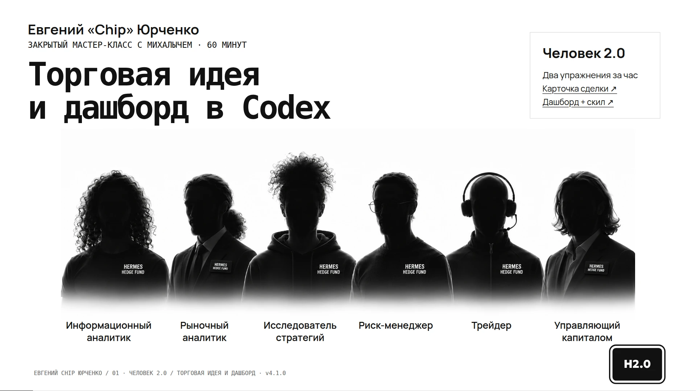

Торговая идея и дашборд в Codex
Мастер-класс с Биржевиком для тех, кто торгует на Мосбирже. На примере Сбера проверим новость, разберём график, подключим данные брокера и рассчитаем размер позиции в Codex.

Что будем делать
Два упражнения: проверим новость о Сбере и рассчитаем позицию; затем добавим проектный скил и соберём страницу контроля отдельного перп-портфеля.
Что останется у вас
Карточка сделки, дашборд с позициями и риском, скил и данные для повторной сборки. На каждом слайде — прямое копирование задания в Codex.
Материалы эфира
Основная практика: скил и дашборд перпов
Дашборд входит в часовой мастер-класс. Сначала используем одинаковый снимок из материалов; затем можно выбрать свои данные и повторить сборку.
Повторяйте в своём Codex
На каждом из 21 слайда есть «Копировать в Codex»: один клик копирует задание. Рядом кнопка «Промпт» открывает входные данные, ожидаемый файл и проверку. Всего 24 промпта, включая подключения.
Скачать все промпты · Markdown · Скачать слайды · PDF
Начните с первых двух слайдов в отдельной папке Codex. После эфира проверьте карточку, дашборд и скил. Работа с учебными данными не является подключением вашего реального счёта.